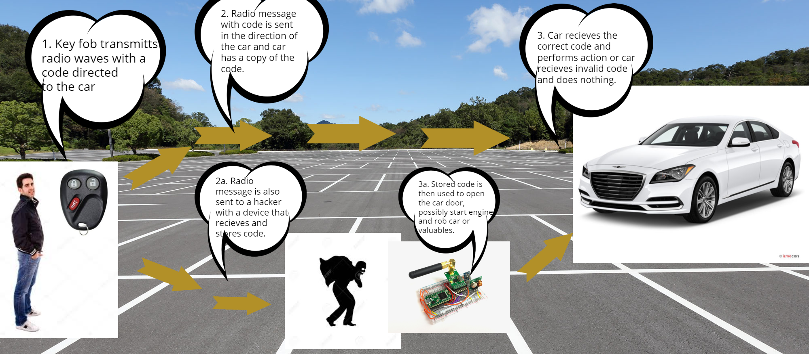

Artifacts in computer science are comparable to an essay in English Language, however are much more flexible than that. An artifact can be a demonstration or visual representation of some kind of computer science principle. They act as a piece of evidence that you learned a concept or an answer to a prompt provided relating to computer science. Usually these are reserved for large projects and practice artifacts for the explore task.
This computer history project was assigned to us by our computer science teacher, as part of the prompt requiring us to represent the advancement of a specific computing innovation over a specific series of time. The only other requirement was that it be a mere 10 seconds long and in the format of a gif. Gifs are a series of pictures shot quickly over a small time frame to create the illusion of a video. Taking these requirements and implementing them has led to the following video, displayed below.
The video that you just saw, was created and developed in Minecraft, via the screenshot feature. The pieces were then strung together to create the moving video like structure you just saw. The computing innovation displayed was personal computers between the two-timeframes of 1984 versus 2013. The date is displayed at the top and at the bottom right corner is the specifications of both computers. These computers were completely built by hand in Minecraft.
This research project was assigned to us by our computer science teacher, as part of the prompt requiring us to research and display how a given topic functions, what its purpose is, or the impact it has on society. This project was an example of the explore task for the AP Computer Science Exam and was meant to get us ready for the real AP Explore Task. Taking these requirements and implementing them has led to the following image, displayed below.
The image that you just saw reveals how Key Fobs function to open up a car door or perform other actions, as shown by the text bubbles that reveal step by step instructions on the process. Additionally there is an alternative path that shows how there are vunerablilites allowing for thiefs to steal the code and open your car remotely. This shows not only the function of Key Fobs, but also the societal impact it has.